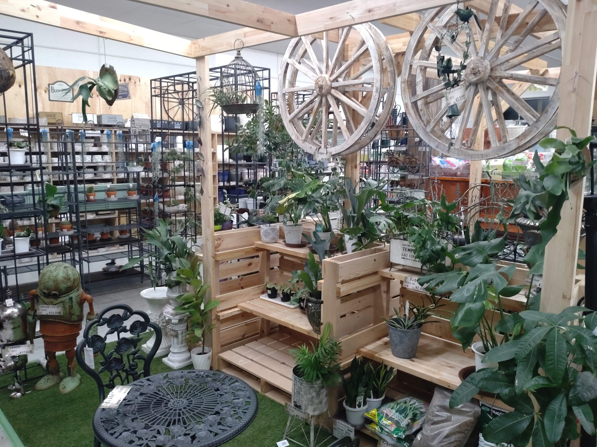
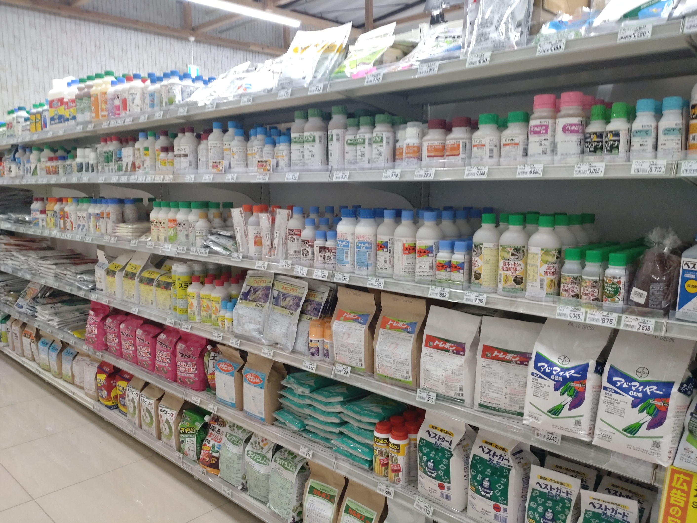
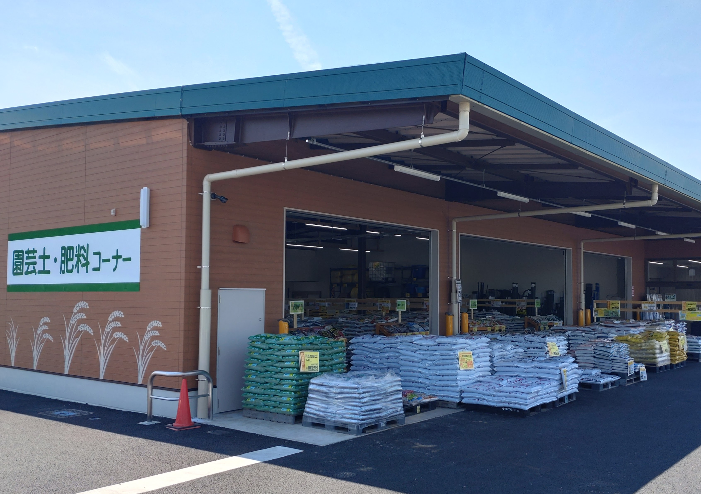
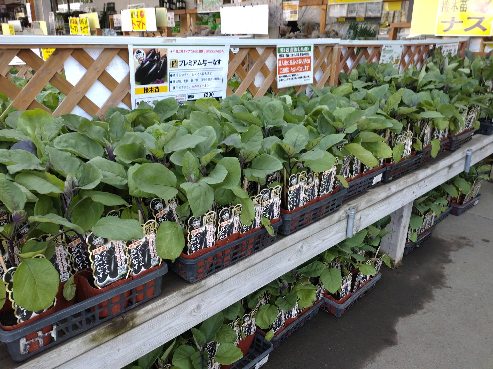
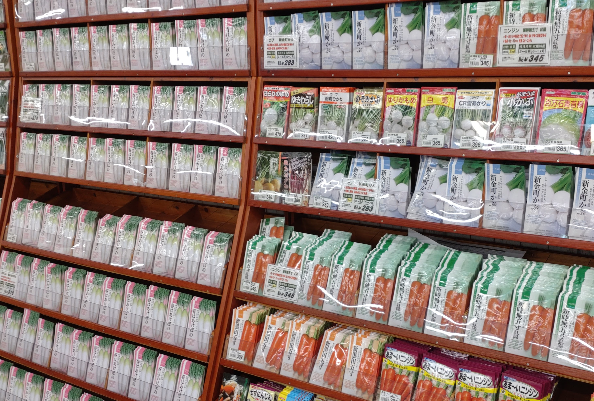
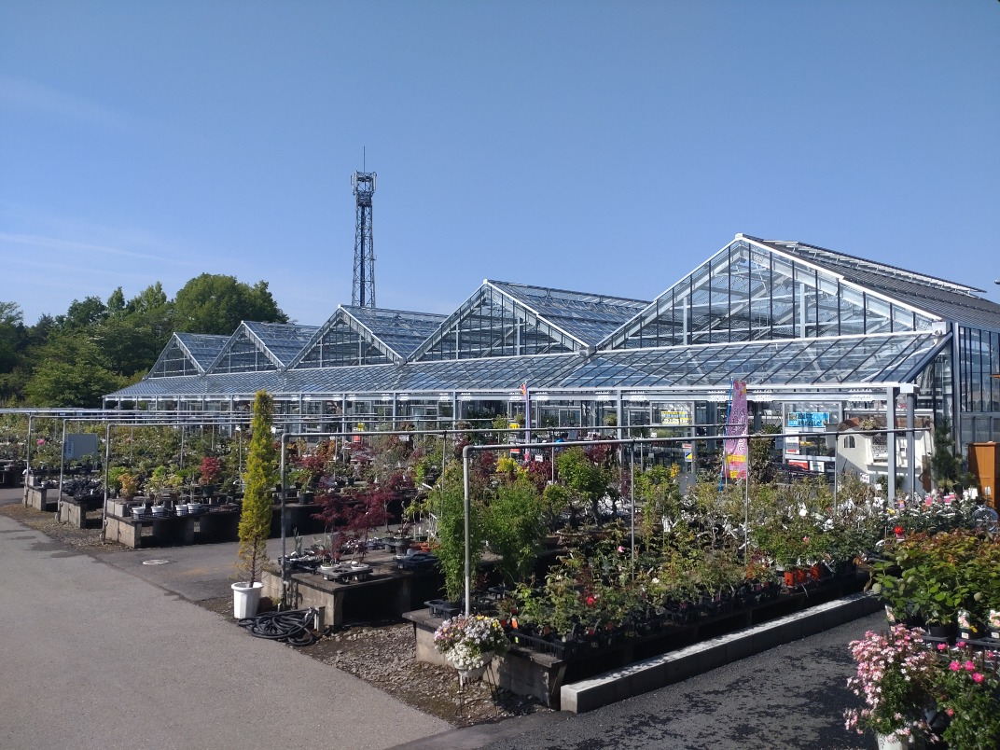
会社概要
| 会社名 | 株式会社みのり |
|---|---|
| 所在地 | 〒324-0047 栃木県大田原市美原1-3138-2 |
| 電話番号 | 0287-XX-XXXX |
| 設立 | 1992年4月 |
| 事業内容 | 農業資材、農薬、肥料、機械など生産資材の販売 野菜・花の種や苗の販売 園芸・ガーデニング関連商品の販売 |
| 店舗数 | 9店舗（栃木県・茨城県） |
| 取り扱い商品数 | 30,000点以上 |
| 代表者 | 代表取締役 郡司 健 |
| 資本金 | 3300万円 |
| 従業員数 | 約120名 |
私たちについて
「農家の店みのり」は、地域の農家さんや家庭菜園を楽しむ皆さまの"頼れる相談相手"として、長年この土地でお店を続けてきました。
日々の仕入れや商品管理は、実際に現場で作物づくりに関わってきたスタッフが担当しており、用途に合わせて最適な資材をご提案できる体制を整えています。
当店のスタッフは、農業経験10年以上のベテランから、農業士・園芸士・農薬管理士などの資格を持つ専門スタッフまで、多様な経験と知識を持っています。野菜栽培、果樹、花きなど、それぞれの専門分野に精通したスタッフが、お客様のご要望に合わせて最適なアドバイスをいたします。
お店の強み
当店は、大型ホームセンターとは異なり、農業資材・園芸用品に特化した専門店です。
肥料・土・苗・農具などを幅広く取り扱うだけでなく、「どれを選べば良いか迷ってしまう」というお客様に対しても、経験豊富なスタッフが目的や環境に合わせて丁寧にアドバイスいたします。
地域の気候や土壌に合わせた"実践的なアドバイス"ができるのは、長年この地域で営業してきた当店ならではの強みです。
お客様への価値
農家の店みのりでは、初心者の園芸ユーザーからプロの農家さんまで、幅広いお客様にご利用いただいています。
「初めて野菜を育てるけど何を買えばいい？」「土の改良方法が知りたい」「この苗に合う肥料は？」など、どんなご相談でも歓迎です。
商品を販売するだけでなく、"育てる楽しさと成功体験" をサポートするお店として、地域の皆さまの豊かな暮らしのお手伝いをしてまいります。
沿革
-
1992年 株式会社みのりを創立
-
1992年4月 栃木県那須塩原市に西那須野店オープン

-
1995年2月 栃木県下野市に石橋店オープン
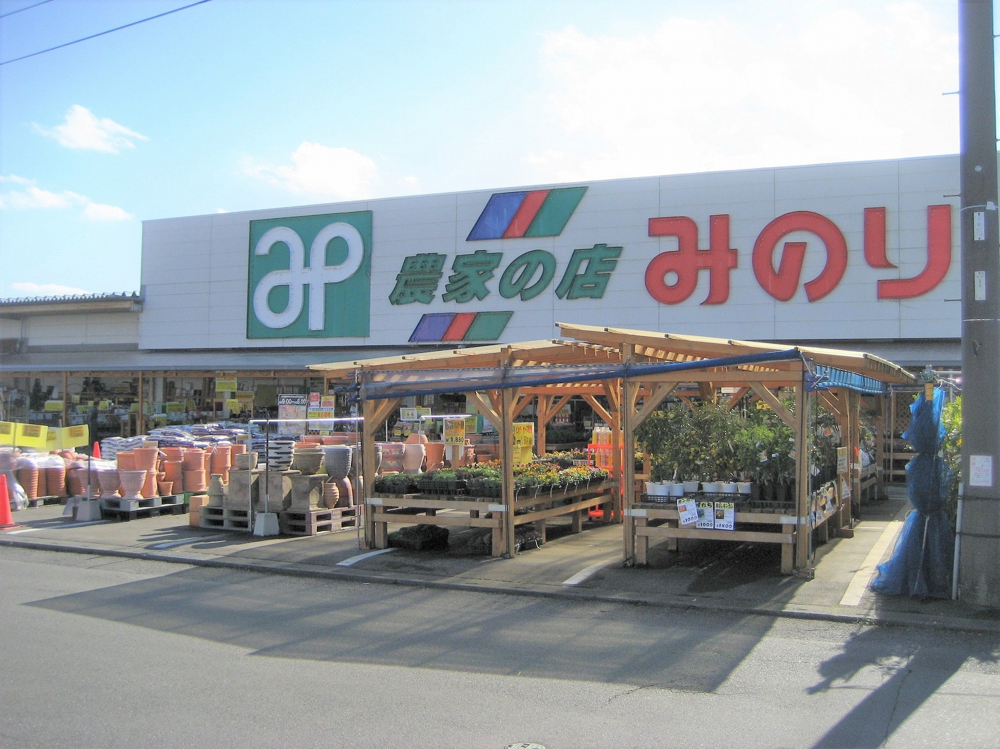
-
1998年2月 栃木県真岡市に真岡店オープン
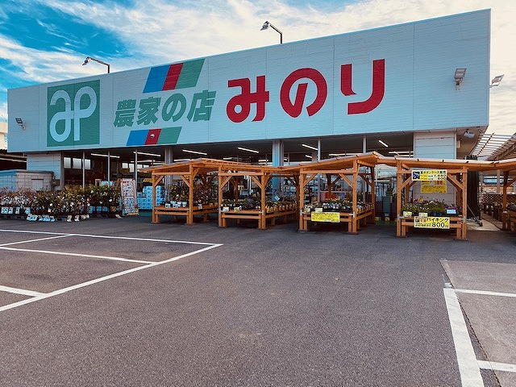
-
1998年3月 栃木県大田原市に大田原店オープン
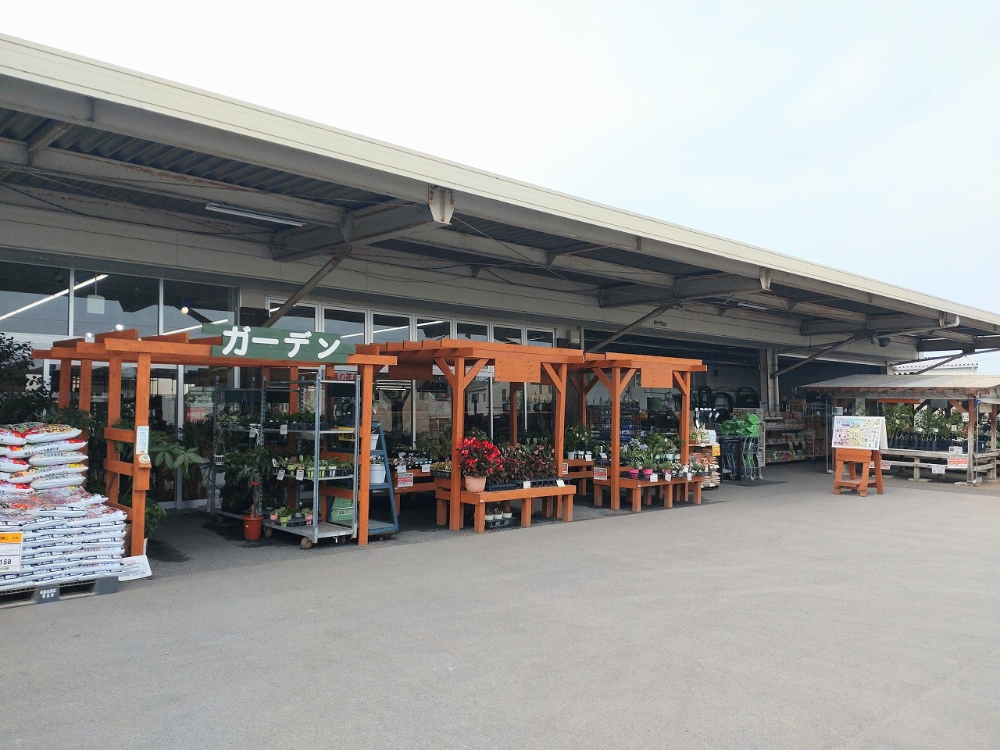
-
1998年3月 栃木県さくら市に氏家店オープン
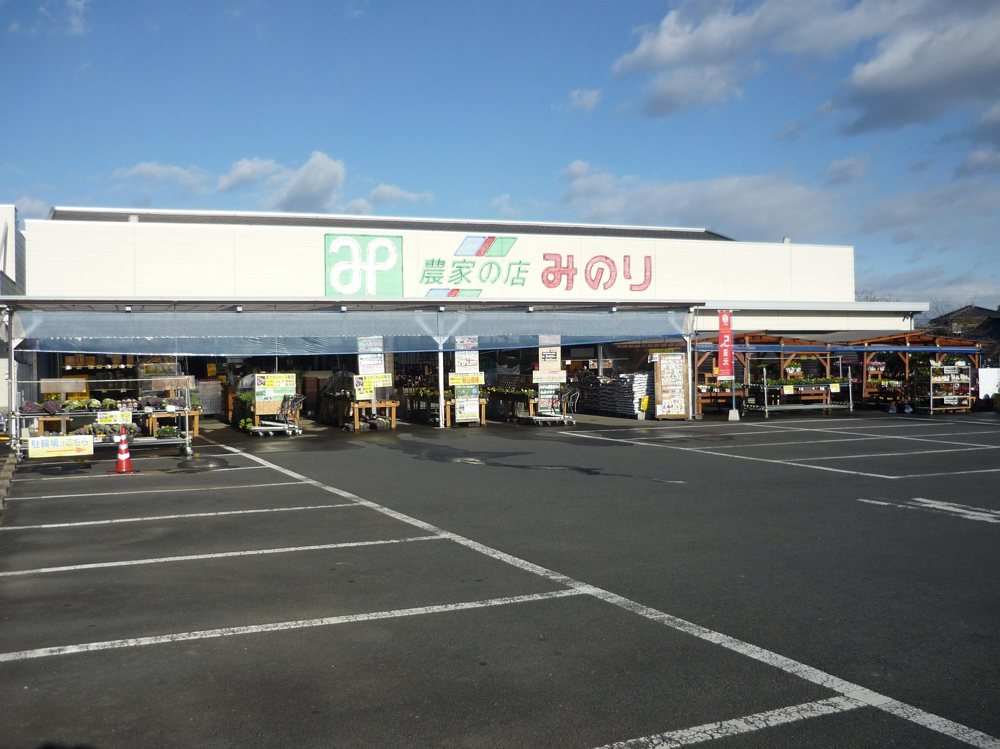
-
1999年8月 栃木県鹿沼市に鹿沼店オープン
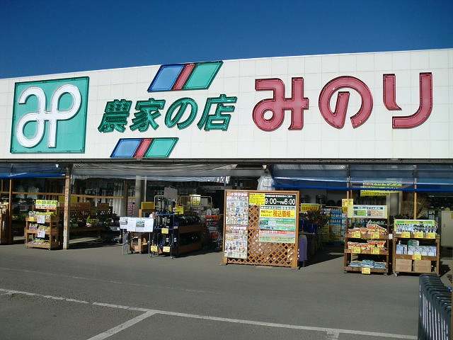
-
2001年8月 茨城県筑西市に協和店オープン
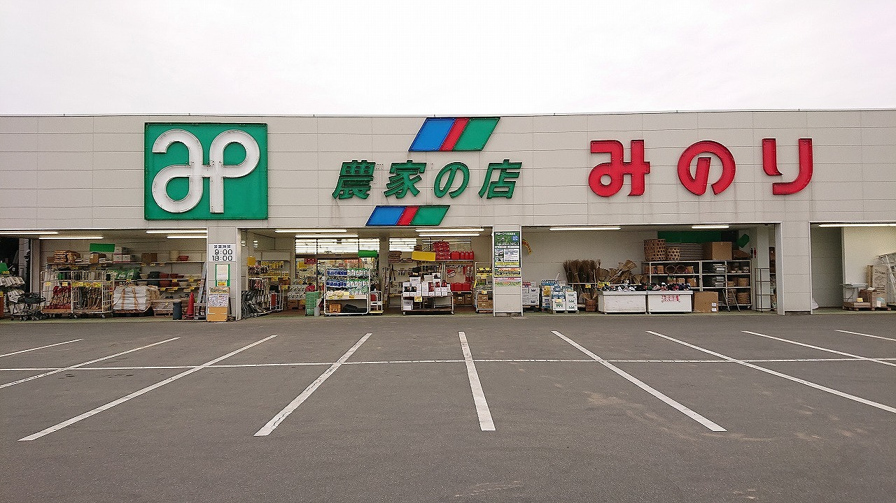
-
2002年4月 栃木県市貝町に市貝店オープン
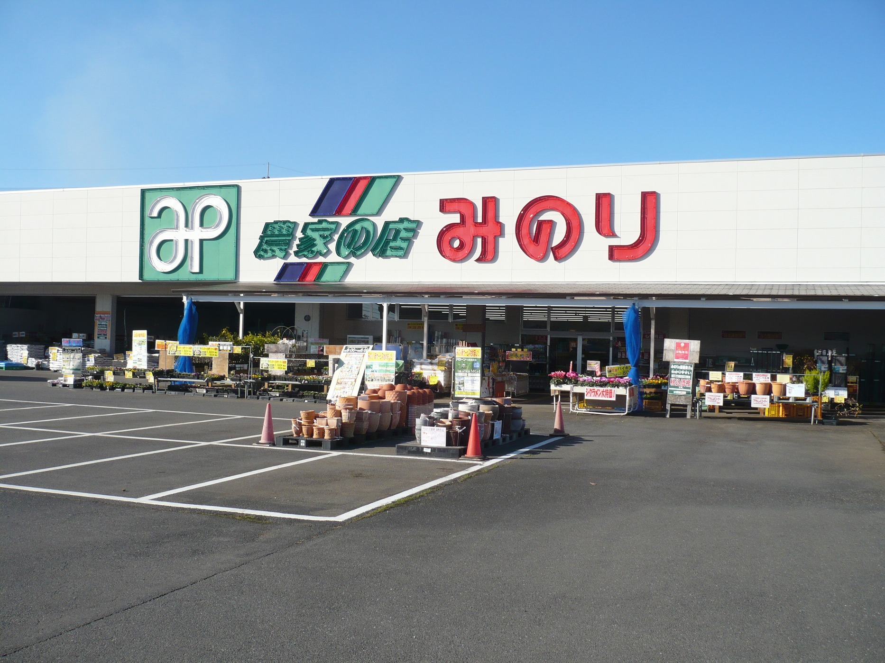
-
2023年 栃木県宇都宮市にみのり花木センター
インターパーク店オープン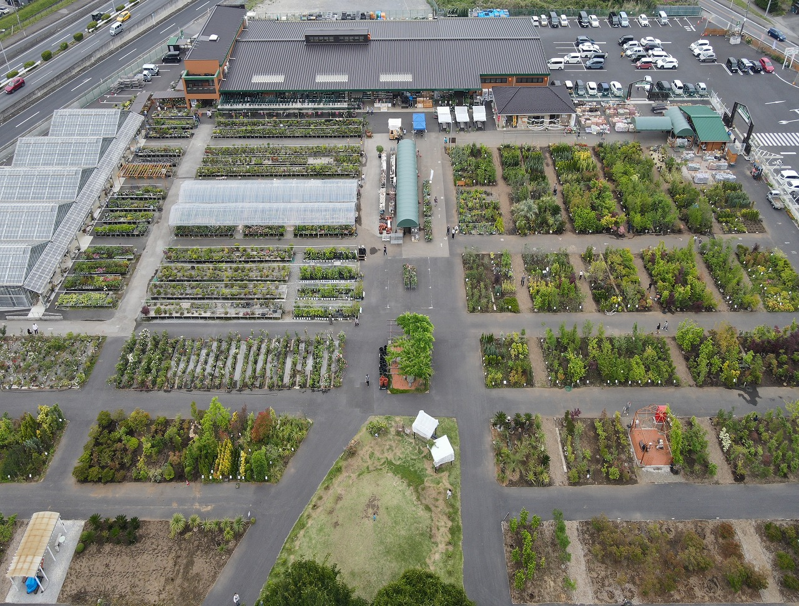